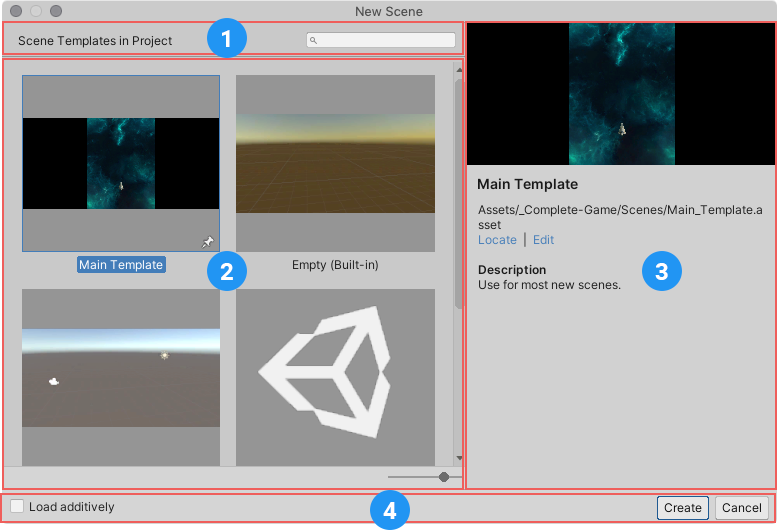

场景
场景是您在 Unity 中加工内容的界面。场景是包含游戏或应用程序的全部或部分内容的资源。例如，您可能会在单个场景中构建一个简单的游戏，而对于更复杂的游戏，您可能每个级别使用一个场景，每个场景都有自己的环境、角色、障碍物、装饰和 UI。您可以在一个项目中创建任意数量的场景。
当您创建一个新项目并首次打开时，Unity 会打开一个仅包含一个摄像机和一个光源的示例场景。

有关使用场景的信息，请参阅创建、加载和保存场景。
场景模板
Unity 使用场景模板来创建新场景。场景模板是存储在项目中的资源。它们类似于场景，但旨在复制使用而不是直接使用。
有关创建和使用场景模板的信息，请参阅场景模板。
New Scene 对话
从 File 菜单：(File > New Scene) 或使用 Ctrl/Cmd + n 快捷方式创建新场景时，将打开 New Scene 对话。该对话用于从项目中的特定场景模板创建新场景，并获取有关现有模板的信息。

New Scene 对话
1.搜索字段： 按名称查找可用的场景模板。 1.模板：项目中所有可用模板的列表。 1.模板详情：显示有关当前选定模板的信息。 1.命令栏：提供用于从所选模板创建新场景的命令和选项。
创建新场景
要从 New Scene 对话创建新场景，请从模板列表中选择一个模板，然后单击 Create。有关以这种方式创建场景的详细说明，请参阅从 New Scene 对话创建新场景。
固定模板
在 New Scene 对话框的模板列表中，固定模板出现在其他模板之前。最后固定的模板出现在列表顶部。
单击任何模板的固定图标可将其固定。
您还可以在编辑其属性时固定模板。在场景模板 Inspector 中，启用 Pin in New Scene Dialog 选项。
定位和编辑模板
当您在 New Scene 对话框中选择模板时，详细信息窗格会显示模板的路径（下图中的 1）。
要在 Project 窗口中突出显示模板，请选择 Locate 链接（下图中的 2）。
要在 Inspector 窗口中打开模板并编辑其属性，选择 Edit 链接（下图中的 3）。
多场景编辑
您可以同时打开多个场景进行编辑。有关详细信息，请参阅多场景编辑。